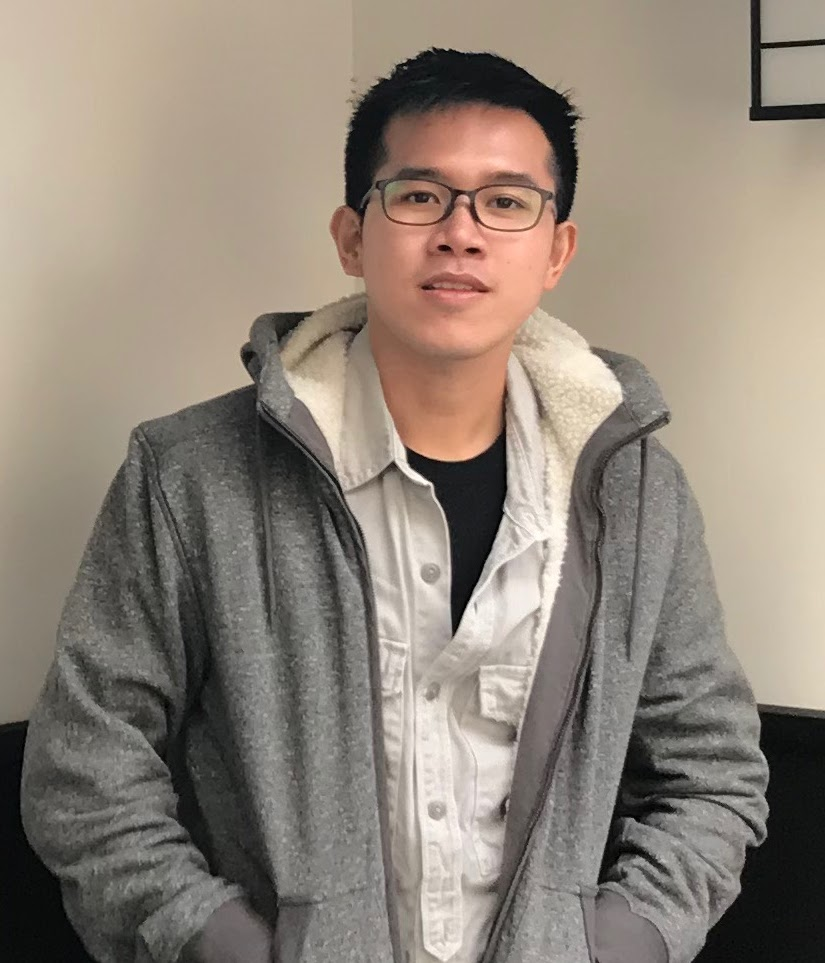

The NTU-NLP group will be hosting a series of talks, featuring local NLP researchers and scientists. The seminars will be organized monthly. The goal is to create a platform for local NLP/ML enthusiasts to share their work and to encourage collaborations across local universities and organizations.
Ph.D’s, Postdocs, and company scientists are all welcome to participate. Interested Speakers please send their inquiry to ruochen002@e.ntu.edu.sg.
Subscription
To subscribe to a mailing list of upcoming talks, please follow either of the steps:
Please go to Google Groups and search “ntu-nlp-sg-seminar” under All groups and messages tab.
Email with subject ntu-nlp-sg-seminar to
ntunlpsg@gmail.com.
Schedule
12 July, 2021 |
 Thanh-Tung Nguyen (Thomas) Ph.D. Candidate, NTU. Linkedin | Google Scholar | Website Research topic: Parsing, RNN, Machine Translation Talk Details Registration Link |
16 August, 2021 |
 Liangming Pan Ph.D. Candidate, NUS. Website | Google Scholar Research topic: Text Generation, Knowledge Graph, Multi-media Learning Talk Details Registration Link |
13 September, 2021 |
 Henry Hung Le Ph.D. Candidate, SMU. Website | Google Scholar Research topic: Conversational AI, Video Understanding, Task-oriented Dialogues Talk Details Registration Link |
Organizing Team
 |
 |
 |
 |
 |
|
| Shafiq Joty | Ruochen Zhao | Mathieu RAVAUT | Hailin Chen | M Saiful Bari | Lin Xiang |